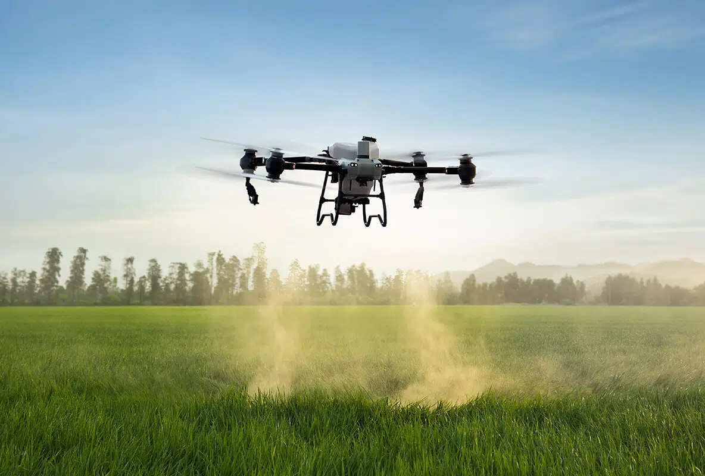
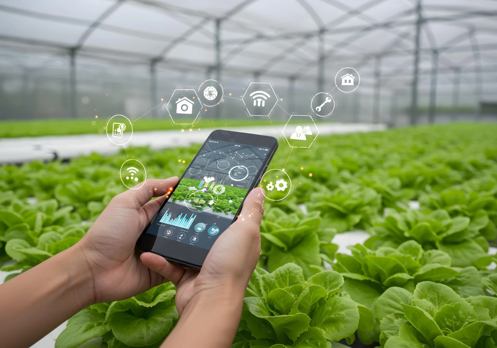
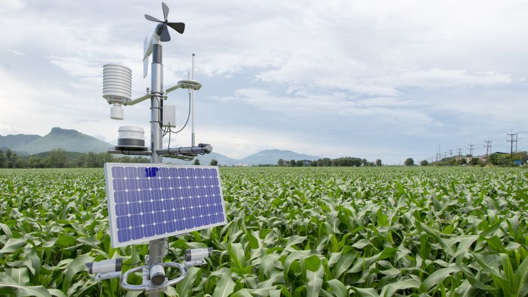
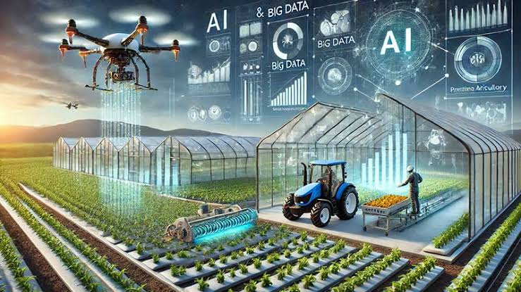
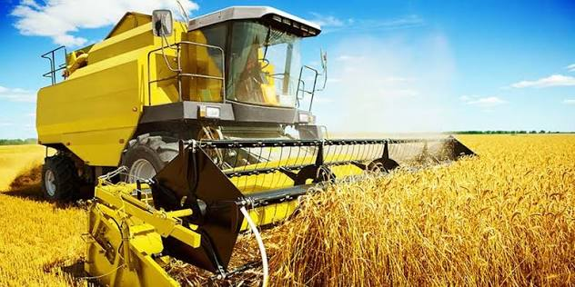
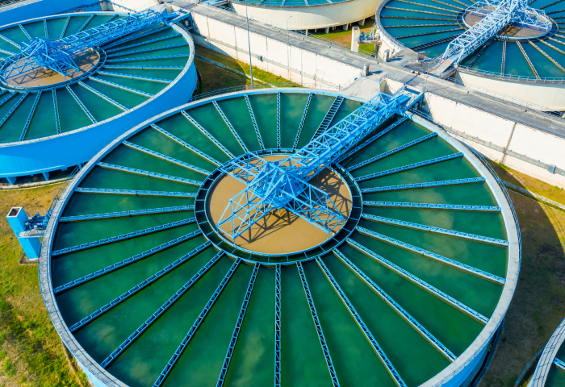

เทคโนโลยีการเกษตร
เรียนรู้เทคโนโลยีและนวัตกรรมเพื่อการเกษตร เลือกหัวข้อเพื่ออ่านรายละเอียด
01 โดรนการเกษตร สำรวจแปลงและดูแลพืชจากมุมสูง

สำรวจแปลงและดูแลพืชจากมุมสูง
โดรนช่วยถ่ายภาพและสำรวจแปลงจากมุมสูง ทำให้เห็นภาพรวมของพื้นที่ และจุดที่ควรลงไปตรวจสอบเพิ่มเติม ความสามารถขึ้นอยู่กับชนิดของโดรน และอุปกรณ์ที่ติดตั้ง
เริ่มต้นอย่างไร?
กำหนดก่อนว่าต้องการใช้โดรนทำอะไร เช่น สำรวจพื้นที่หรือบันทึกภาพการเติบโต แล้วเลือกอุปกรณ์ให้เหมาะกับงาน
- สำรวจขนาดพื้นที่และสิ่งกีดขวางในแปลง
- ศึกษาวิธีใช้งานและข้อกำหนดที่เกี่ยวข้องก่อนบิน
- นำภาพที่ได้มาตรวจสอบร่วมกับสภาพจริงในแปลง
02 Smart Farming วางแผนฟาร์มด้วยข้อมูล

ใช้ข้อมูลช่วยตัดสินใจดูแลฟาร์ม
Smart Farming คือการนำข้อมูลและเทคโนโลยี มาช่วยจัดการงานเกษตร เช่น บันทึกการให้น้ำ ติดตามสภาพแปลง และวางแผนการดูแลพืช สามารถเริ่มจากเครื่องมือง่าย ๆ ที่เหมาะกับขนาดฟาร์ม
เริ่มจากปัญหาที่อยากแก้
เลือกงานที่ต้องการปรับปรุงก่อน แล้วค่อยหาเครื่องมือมาช่วย ไม่จำเป็นต้องติดตั้งระบบทั้งหมดพร้อมกัน
- บันทึกวันปลูก การให้น้ำ และค่าใช้จ่าย
- เปรียบเทียบข้อมูลระหว่างรอบการปลูก
- ทดลองระบบในพื้นที่เล็กก่อนขยายใช้งาน
03 IoT & Sensor ตรวจวัดและติดตามแปลงปลูก

ติดตามข้อมูลจากอุปกรณ์ในพื้นที่
เซนเซอร์ใช้ตรวจวัดค่าต่าง ๆ เช่น ความชื้นดิน อุณหภูมิ และความชื้นอากาศ เมื่อนำมาเชื่อมต่อกับระบบ IoT ก็สามารถส่งข้อมูลไปแสดงบนอุปกรณ์อื่น เพื่อช่วยติดตามสภาพแปลง
ติดตั้งอย่างไรให้ข้อมูลมีประโยชน์?
เลือกเซนเซอร์ให้ตรงกับสิ่งที่ต้องการวัด และติดตั้งในตำแหน่งที่สะท้อนสภาพพื้นที่จริง
- ตรวจแหล่งจ่ายไฟและสัญญาณสื่อสารในแปลง
- ติดตั้งและตรวจสอบอุปกรณ์ตามคู่มือผู้ผลิต
- เปรียบเทียบค่าที่วัดได้กับการสำรวจแปลงจริง
04 AI / Big Data วิเคราะห์ข้อมูลเพื่อการเกษตร

มองหาแนวโน้มจากข้อมูลในฟาร์ม
การวิเคราะห์ข้อมูลช่วยเปรียบเทียบผลผลิต สภาพอากาศ และการดูแลในแต่ละช่วงเวลา ส่วน AI สามารถช่วยค้นหารูปแบบจากข้อมูล เพื่อนำไปประกอบการตัดสินใจ โดยผลลัพธ์ขึ้นอยู่กับคุณภาพของข้อมูลที่ใช้
เตรียมข้อมูลก่อนเริ่มใช้งาน
เริ่มจากบันทึกข้อมูลให้สม่ำเสมอ และใช้หน่วยวัดเดียวกัน เพื่อให้เปรียบเทียบข้อมูลได้ง่าย
- ระบุวันที่ พื้นที่ปลูก และชนิดพืชให้ชัดเจน
- ตรวจข้อมูลที่ขาดหายหรือกรอกผิดก่อนวิเคราะห์
- ใช้ผลวิเคราะห์ร่วมกับประสบการณ์และข้อมูลหน้างาน
05 เครื่องจักรกล ช่วยทุ่นแรงในการทำงาน

เลือกเครื่องมือให้เหมาะกับงานและพื้นที่
เครื่องจักรช่วยงานเตรียมดิน ปลูก ดูแลแปลง หรือเก็บเกี่ยว การเลือกใช้งานควรพิจารณาขนาดพื้นที่ ลักษณะงาน และความสะดวกในการดูแลรักษา
พิจารณาอะไรบ้างก่อนเลือกใช้?
เปรียบเทียบการซื้อ การเช่า หรือการจ้างบริการให้เหมาะกับความถี่ในการใช้งาน
- เลือกขนาดเครื่องให้เหมาะกับแปลงและทางเข้าออก
- นับค่าเชื้อเพลิง ค่าซ่อม และค่าบำรุงรักษาร่วมด้วย
- ศึกษาคู่มือและใช้งานตามข้อกำหนดด้านความปลอดภัย
06 ระบบน้ำอัจฉริยะ ควบคุมการให้น้ำอย่างเหมาะสม

วางแผนให้น้ำจากสภาพแปลง
ระบบน้ำอัจฉริยะช่วยควบคุมการให้น้ำ ตามเวลาหรือข้อมูลจากเซนเซอร์ โดยต้องตั้งค่าให้เหมาะกับชนิดพืช สภาพดิน และช่วงการเจริญเติบโต
เริ่มต้นวางระบบอย่างไร?
สำรวจแหล่งน้ำและแบ่งพื้นที่ให้น้ำให้เหมาะสม ก่อนเลือกอุปกรณ์ควบคุมที่ต้องการใช้
- ตรวจแรงดันน้ำและความเหมาะสมของหัวจ่ายน้ำ
- ตรวจจุดรั่วและการอุดตันของระบบเป็นประจำ
- ปรับการให้น้ำตามฝนและความชื้นในแปลงจริง